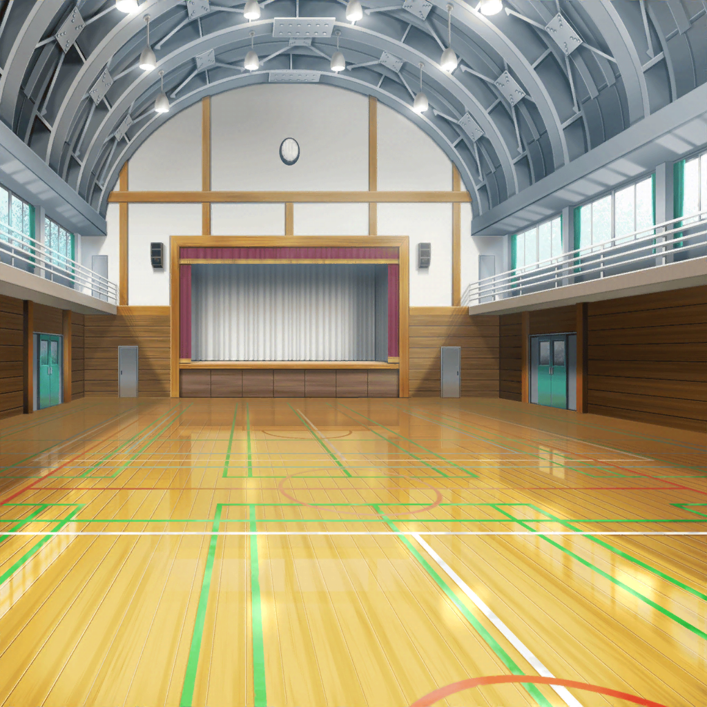

花咲川女子学園 体育館
剣道部員
セイヤーッ！ メーーーン！
剣道部顧問
まだまだ！ 声が小さいっ！
紗夜
……ものすごい気迫。でも、まだ足りないんですね
燐子
そうですね……十分……こわいくらい、なのに……
剣道部顧問
次っ！ 若宮さん！
イヴ
はいっ！
燐子
……次は……若宮さんの出番、なんですね……
紗夜
若宮さんが小さく見える……ずいぶんと背の高い方が
お相手なんですね
燐子
はい……すごく、強そうです……
剣道部顧問
では……始めっ！
剣道部員
メーーーン！
イヴ
……っ！
剣道部顧問
やめ！
紗夜
……！ そんな、一瞬で……
燐子
は……速すぎて……見えませんでした
紗夜
ええ、私もです
イヴ
……っ……もう一本、お願いします！
剣道部顧問
いいでしょう。では２人とも、もう一度構えてください。
――始めっ！
30分後
イヴ
はぁ、はぁ……はぁ……
紗夜
開始から30分。ずっと同じ方と打ち合っていますね
紗夜
相手の方には、まだ余裕が見られますが、
若宮さんのほうは……隙（すき）を作ろうと動き回ったせいで
体力を消耗してしまっているみたいです
イヴ
もう……一本ですっ！
紗夜
……どう見ても、若宮さんが不利な状況なのに、
それでも諦めないなんて……すごいですね
燐子
……はい…………本当に……すごいです
燐子
…………わたしって……ダメですね……
ずっと……逃げてばかりで……
紗夜
え？
燐子
若宮さんは……どんなに、苦しくて……怖くても……
何度も……何度も立ち向かって……
紗夜
……私は、自分が『逃げている』と認めることすら
できませんでしたよ
燐子
え……？
紗夜
白金さんが、悩んでいることは知っていました。
実は昨日、宇田川さんとの話が、少し聞こえてしまって。
黙っていてごめんなさい
燐子
い、いえ……そんな……
紗夜
白金さん。
貴方は怖いことから逃げてしまっていたとしても、
自分が逃げているということを知っていますよね
紗夜
それはつまり、自分自身から逃げずに、
ずっと自分と向き合い続けている証拠だと思います
燐子
自分からは……逃げてない……？ わたしが……？
紗夜
はい。自分を見つめ続けていたからこそ、
このままでいいのか不安になった。
そうじゃありませんか？
燐子
わたし……は……
イヴ
メーーーン……！ ……っ……！
紗夜・燐子
……！
紗夜
若宮さん、動きがかなり鈍くなってきていますね……
体格差もありますし、残念ですがこのままでは……
燐子
………………って……
紗夜
……？ 白金さ……
燐子
わ……若宮さん…………
燐子
若宮さん…………
……っ……頑張って……あ、諦めないで……ください……っ
紗夜
！
イヴ
……っ！ ……メーーーーーーン！！！！！！
剣道部顧問
一本！ やめ！
燐子
あっ…………勝っ……た…………？
イヴ
……っ……やった！ やりました！
リンコさんの声、バッチリ聞こえましたよー！
私達、２人でとった一本です！
燐子
そ、そんな……あ、あれは……思わず声が出ちゃった、だけで……
紗夜
若宮さんの言う通りだと思いますよ
燐子
そ、そんな……氷川さんまで……
紗夜
ふふ。そう言われても、これは本心ですから
紗夜
なんだか、とても充実した時間でしたね
燐子
は……はい……で、でも……
まさか、あんなに喜んで……もらえるなんて
紗夜
白金さんの気持ちが、若宮さんに届いたんだと思いますよ。
それじゃあ、そろそろ帰りましょうか
燐子
……はい………………あ……あのっ
紗夜
？ どうかしましたか？
燐子
あの……わたし…………
燐子
わ、わたし……弓道部の見学が……したいです